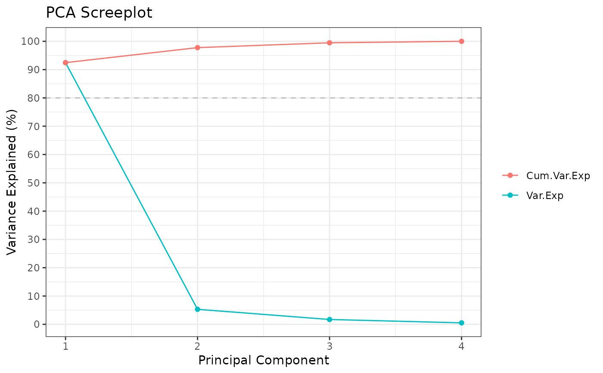

Adapted from glab.library::PCA_from_file.
Usage
run_PCA(
df,
savename = NULL,
summary = FALSE,
center = TRUE,
scale = TRUE,
tol = 0.05,
screeplot = TRUE
)Arguments
- df
(path to) numeric dataframe; samples as columns, genes/features as rows
- savename
string; filepath (no ext.) to save PCA scores, loadings, sdev under
- summary
logical; output summary info
- center
logical; indicate whether the variables should be shifted to be zero centered
- scale
logical; indicate whether the variables should be scaled to have unit variance
- tol
numerical; indicate the magnitude below which components should be omitted
- screeplot
logical; output + save screeplot?
Details
In general, Z-score standardization (center = T; scale = T) before PCA is advised.
center = T: PCA maximizes the sum-of-squared deviations from the origin in the first PC. Variance is only maximized if the data is pre-centered.
scale = T: If one feature varies more than others, the feature will dominate resulting principal components. Scaling will also result in components in the same order of magnitude.
Examples
data(iris)
Rubrary::run_PCA(t(iris[,c(1:4)]))
#> ** Cumulative var. exp. >= 80% at PC 2 (95.8%)

#> Standard deviations (1, .., p=4):
#> [1] 1.7083611 0.9560494 0.3830886 0.1439265
#>
#> Rotation (n x k) = (4 x 4):
#> PC1 PC2 PC3 PC4
#> Sepal.Length 0.5210659 -0.37741762 0.7195664 0.2612863
#> Sepal.Width -0.2693474 -0.92329566 -0.2443818 -0.1235096
#> Petal.Length 0.5804131 -0.02449161 -0.1421264 -0.8014492
#> Petal.Width 0.5648565 -0.06694199 -0.6342727 0.5235971